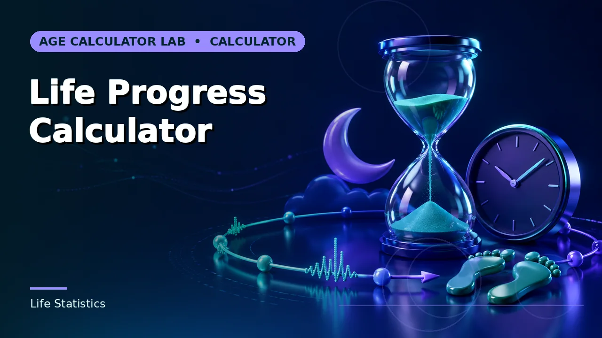

Quick answer
At eight hours a night the model assigns a third of your life to sleep. Segmenting by life stage gives a higher and more honest figure.
The straight-line model
Days lived times average hours per night, divided by 24, gives days spent asleep. At an eight-hour average across 31 years that is about 3,865 days — roughly 10.6 years, or a third of the total.
The one-third figure is where the familiar claim comes from, and it is exactly as good as the eight-hour assumption underneath it.
Use this guide with the right tool: Open the Sleep Time Lived Calculator for estimated lifetime time spent sleeping from average hours per day. If the question shifts, compare it with the Age in Days Calculator or the Life Progress Calculator.
Sleep is not constant across a life
Newborns sleep 14 to 17 hours a day. Toddlers 11 to 14. School-age children 9 to 12. Teenagers 8 to 10. Adults 7 to 9, and older adults often less with more fragmentation.
A single adult average applied across a whole life understates childhood substantially. Someone in their thirties has spent well over a third of their life asleep, because their first decade ran far above their current rate. Segmenting by life stage and summing gives a noticeably higher and more defensible total.
Time in bed is not time asleep
Most people take some time to fall asleep and wake briefly during the night without remembering it. Sleep efficiency — actual sleep as a proportion of time in bed — is commonly in the region of 85 to 90 per cent for people sleeping well, and lower for people who are not.
So a figure based on hours in bed overstates sleep by roughly an hour a night. If your input comes from bedtime and waking time rather than a tracker, the total is high by around 10 per cent.
What it is for
It reframes sleep as a substantial and ongoing part of life rather than an interruption to it, which is a reasonable thing to convey. Ten years of anything is worth thinking about.
It says nothing about sleep quality, and it should not be read as a reason to sleep less. Sleep need is individual and largely not negotiable, and treating the figure as time to be reclaimed is the one conclusion the arithmetic does not support.
Worked example
At 11,594 days lived and eight hours a night, the simple model gives about 3,865 days asleep, roughly 10.6 years, while splitting childhood at higher rates pushes the total above 12 years. Run your own days lived at your average.
The segmented estimate, worked in full
The worked example above says that segmenting by life stage pushes the total above 12 years for the same person. Here is that calculation done openly, for the same 11,594 days lived, using the midpoint of each sleep range given earlier in this guide — 15.5 hours for the first year (newborns 14 to 17), 12.5 through the toddler range, 10.5 through the school-age range, 9 through the teenage range, and 8 for the adult years.
| Life stage | Days in stage | Hours a night | Days asleep |
|---|---|---|---|
| First year | 365 | 15.5 | 236 |
| Ages 1 to 5 | 1,461 | 12.5 | 761 |
| Ages 5 to 13 | 2,922 | 10.5 | 1,278 |
| Ages 13 to 19 | 2,192 | 9 | 822 |
| Ages 19 to 31 | 4,654 | 8 | 1,551 |
| Total | 11,594 | — | 4,648 |
The segmented total is about 4,648 days asleep — roughly 12.7 years, or about 40 per cent of the life so far, against the straight-line figure of 3,865 days and one third. The difference is about 783 days, a little over two years, and every day of it comes from childhood: the first thirteen years contribute 2,275 days of sleep in 4,748 days lived, a rate of nearly 48 per cent, which no adult average applied backwards can reproduce.
Two cautions belong with the table. The stage rates are midpoints of ranges, so the segmented figure is a better-structured estimate, not a measurement — moving each rate by an hour moves the total by hundreds of days. And the day counts are the real calendar lengths of those stages for this example; a different birth date shifts them by a day or two, nowhere near enough to change the conclusion.
The efficiency correction from the earlier section cuts the other way, and the two corrections are worth netting off. If the stage rates in the table came from time in bed rather than measured sleep, discount them at 85 to 90 per cent and the segmented total falls to somewhere between about 3,951 and 4,184 days. Even fully discounted, it stays above the straight-line figure of 3,865 — childhood pushes the total up by more than efficiency pulls it down, for this shape of life. A single-rate estimate built on hours in bed at an adult rate makes both errors at once and they happen to offset, which is a fragile kind of accuracy: right for the wrong reasons, and only for this particular age.
The model also runs forwards, which is the direction planning questions face. From 31, every further year at eight hours a night adds about 122 days asleep. Nineteen more years of it, to age 50, adds about 2,313 days, taking the lifetime total to roughly 6,962 days — about 19.1 years of the 50, or 38 per cent. The share falls as the adult years accumulate, because the denominator grows at the adult rate while the childhood surplus stays fixed. Anyone quoting the one-third figure for an older adult is therefore wrong in the opposite direction to the childhood error: the proportion genuinely does settle towards a third, late in life, once enough adult-rate years have diluted the start.
Reading the Sleep Time Lived Calculator against this: the tool applies a single rate, which is the straight-line model. To reproduce the segmented figure with it, run the tool once per life stage — days in the stage as the lifespan input, that stage's rate as the average — and add the five results. The FAQ below points the same way. If you only run it once, run it knowing the direction of the error: for anyone past childhood, the single-rate answer at an adult rate is an underestimate, and the size of the underestimate grows with the share of life spent at childhood rates.
Common mistakes to avoid
- Applying an adult average across a whole life. Childhood sleep is far higher. Segment by life stage for a defensible figure.
- Using time in bed as time asleep. Sleep efficiency is typically 85 to 90 per cent, so the total is high by around 10 per cent.
- Reading the total as wasted time. Sleep need is individual and largely fixed. The arithmetic does not support cutting it.
Use the right calculator
Sleep Time Lived Calculator estimates time asleep from average hours per day, Age in Days Calculator totals elapsed days since birth, and Life Progress Calculator shows the share of a chosen lifespan elapsed. And a sleep cycle calculator turns that bedtime-to-wake arithmetic around, suggesting bedtimes and wake times from 90-minute sleep cycles.



More in this series: estimate how many breaths you have taken and how many heartbeats you have lived.
Frequently asked questions
Is a third of life asleep accurate?
It follows from an eight-hour assumption. Accounting for childhood, the real proportion for most people is somewhat higher.
Should I use time in bed or actual sleep?
Actual sleep if you have it. Time in bed overstates by around 10 per cent for most people.
Does the calculator account for age?
No — it applies a single rate. Calculate each life stage separately and add them if you want a better figure.